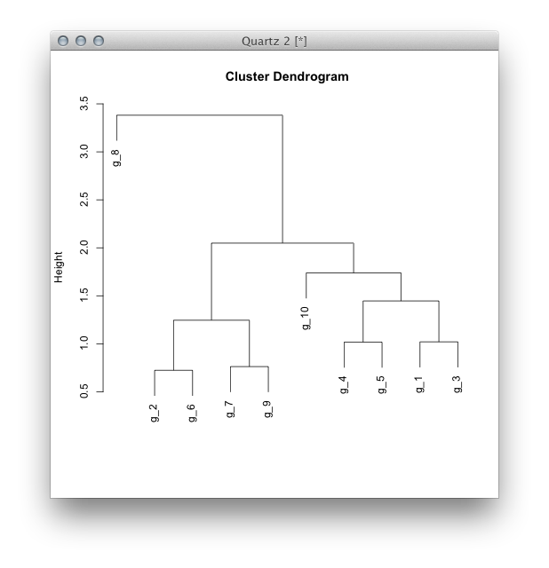
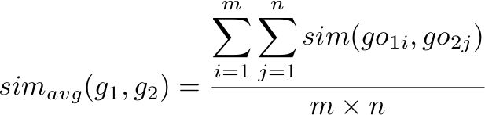

What is Clustering
Clustering is the classification of data objects into similarity groups (clusters) according to a defined distance measure. It is used in many fields, such as machine learning, data mining, pattern recognition, image analysis, genomics, systems biology, etc.
R programming language
The programming language and environment for statistical computing and graphcis. Easy and intuitive. Contains a large collection of add-on "packages", espcially the Bioconductor project, which is becoming the de facto tools for high-throughput genomic data analysis. Visit www.r-project.org to download/install R and reference manuals.
R environment
I recommend using emacs with ESS, see http://ess.r-project.org/ for details. Alternatively, there are easier environment such as Tinn-R and RStudio.
Why clustering in R ?
Efficient data structures and functions for clustering. Efficient environment for algorithm prototyping and benchmarking. Comprehensive set of clustering and machine learning libraries. Standard for data analysis in many areas.
Gene Clustering
Clustering genes, required a characteristic vector of each gene. The distance is defined between pairs of such vectors. In gene expression, the vector of each gene is its expression pattern. In functional analysis, the vector of each gene is its functional similarities to other genes.
Data Acquisition
High-throughtput expreiments
Microarray Second generation sequencing MS-based proteomics gene expression data is usually represented by a matrix, with rows corresponding to genes, and columns corresponding to conditions, experiments or time points.
Data Acquisition
Functional similarity based on biological knowledge
Gene Ontology (GO) provides consistent description of gene and gene products GO covers three domains: BP, CC, and MF GO is organized as a directed acyclic graph (DAG), laying the foundation for quantitative computation of gene knowledge
Data Transformations Choice depends on data set!
Center & standardize
Center: subtract from each vector its mean Standardize: divide by standard deviation => Mean = 0 and SD = 1
Data Transformations Choice depends on data set!
Center & scale with the scale() function
Center: subtract from each vector its mean Scale: divide centered vector by their root mean square (rms)
=> Mean = 0 and SD = 1
Data Transformations Choice depends on data set!
Log transformation
Rank transformation: replace measured values by ranks
Notransformation
Distance Methods
Euclidean distance for two profiles X and Y
Disadvantages: not scale invariant, not for negative correlations
Distance Methods
Manhattan distance
Chebychev distance
Binary, Minowski, Power, Percent disagreement, ...
Distance Methods
Correlation-based distance: 1-r
Pearson correlation coefficient (PCC) Disadvantages: outlier sensitiveSpearman correlation coefficient (SCC) Same calculation as PCC but with ranked values!
Cluster Linkage
Single Linkage (nearest neighbor)
Complete Linkage (furthest neighbor)
Average Linkage
Hierarchical Clustering Steps
1. Identify clusters (items) with closest distance.
2. Join them to new clusters.
3. Compute distance between clusters (items).
4. Return to step 1.
Hierarchical Clustering
Hierarchical Clustering
Suppose we have the follow data
> set.seed <- 123 > s <- matrix(abs(rnorm(50)), ncol=5) > rownames(s) <- paste("g", 1:10, sep="_") > colnames(s) <- paste("t", 1:5, sep="_") > s t_1 t_2 t_3 t_4 t_5 g_1 0.31052207 1.2286231 0.32985271 0.9493966 0.17752750 g_2 0.01499351 0.4356992 0.64952886 0.3156408 0.52470183 g_3 0.32074067 0.7677049 1.01268388 1.5459071 0.25603182 g_4 0.24481853 0.7942931 0.63619680 1.3466543 1.46118155 g_5 0.36278565 1.0508987 1.45768211 1.0318292 1.03621894 g_6 0.26995097 0.5600106 0.42226130 0.6949354 0.02697167 g_7 0.85073887 0.3167600 1.22780917 0.0903493 0.40295777 g_8 1.83079097 0.5358922 2.62261371 2.3713175 0.41908211 g_9 0.71790675 0.3117640 0.47852643 0.0759613 0.35894569 g_10 0.47540333 0.1726331 0.09013414 1.6373156 0.99456967
Hierarchical Clustering using R
> d <- dist(s) > d g_1 g_2 g_3 g_4 g_5 g_6 g_7 g_8 g_9 g_2 1.1577714 g_3 1.0201942 1.3861203 g_4 1.4465088 1.4565610 1.2807424 g_5 1.4319437 1.3882065 1.0737588 1.0170098 g_6 0.7380010 0.7236760 1.0820983 1.6071664 1.5664492 g_7 1.6487678 1.0547999 1.6342472 1.9087489 1.4550958 1.2459064 g_8 3.1824604 3.3818907 2.3735523 2.9434397 2.4397589 3.2003689 2.8560596 g_9 1.3507400 0.7896899 1.6799640 1.8196405 1.7330781 0.8710868 0.7623897 3.3403789 g_10 1.5298877 1.6005323 1.3352613 1.0198164 1.7385538 1.4583919 2.0491616 3.0417808 1.7523867 > hr <- hclust(d) > hr Call: hclust(d = d) Cluster method : complete Distance : euclidean Number of objects: 10 > plot(hr)
Step 1. Identify clusters (items) with closest distance
Distance measurement
distance <- function(x,y, method="euclidean") { switch(method, "euclidean" = sqrt(sum((x-y)^2)) ## implement other methods here. ) } > s["g_1",] t_1 t_2 t_3 t_4 t_5 0.3105221 1.2286231 0.3298527 0.9493966 0.1775275 > s["g_2",] t_1 t_2 t_3 t_4 t_5 0.01499351 0.43569919 0.64952886 0.31564077 0.52470183 > distance(s["g_1",], s["g_2",]) [1] 1.157771
Step 1. Identify clusters (items) with closest distance
Distance measurement
Step 1. Identify clusters (items) with closest distance
Distance measurement
> d <- getDistance(s) > d g_1 g_2 g_3 g_4 g_5 g_6 g_7 g_8 g_9 g_10 g_1 0.000000 1.1577714 1.020194 1.446509 1.431944 0.7380010 1.6487678 3.182460 1.3507400 1.529888 g_2 1.157771 0.0000000 1.386120 1.456561 1.388206 0.7236760 1.0547999 3.381891 0.7896899 1.600532 g_3 1.020194 1.3861203 0.000000 1.280742 1.073759 1.0820983 1.6342472 2.373552 1.6799640 1.335261 g_4 1.446509 1.4565610 1.280742 0.000000 1.017010 1.6071664 1.9087489 2.943440 1.8196405 1.019816 g_5 1.431944 1.3882065 1.073759 1.017010 0.000000 1.5664492 1.4550958 2.439759 1.7330781 1.738554 g_6 0.738001 0.7236760 1.082098 1.607166 1.566449 0.0000000 1.2459064 3.200369 0.8710868 1.458392 g_7 1.648768 1.0547999 1.634247 1.908749 1.455096 1.2459064 0.0000000 2.856060 0.7623897 2.049162 g_8 3.182460 3.3818907 2.373552 2.943440 2.439759 3.2003689 2.8560596 0.000000 3.3403789 3.041781 g_9 1.350740 0.7896899 1.679964 1.819640 1.733078 0.8710868 0.7623897 3.340379 0.0000000 1.752387 g_10 1.529888 1.6005323 1.335261 1.019816 1.738554 1.4583919 2.0491616 3.041781 1.7523867 0.000000
Step 1 & 2. Identify closest clusters (items) and join them to new clusters
Step 3. Compute distance between clusters (items)
linkage <- function(d, method, cn) { sc <- getClosest(d) fun <- switch(method, "complete" = max, "single" = min ) node <- sc$node h <- apply(d[node,], 2, fun) h <- h[! names(h) %in% node] d <- d[!rownames(d) %in% node,] if (is.null(dim(d))) { nm <- names(d) d <- matrix(d, nrow=1) colnames(d) <- nm rownames(d) <- nm[!nm %in% node] } rn <- rownames(d) d <- d[,!colnames(d) %in% node] if(is.null(dim(d))) { d <- matrix(d) rownames(d) <- rn colnames(d) <- rn } d <- rbind(d, h) d <- cbind(d, h=c(h,0)) rownames(d)[rownames(d) == "h"] <- cn colnames(d)[colnames(d) == "h"] <- cn result <- list(subCluster=sc, d=d) return(result) }
Step 4. Iterate step 1-3
Putting all the pieces together
hcluster <- function(mat, method="complete", dist.method="euclidean") { d <- getDistance(mat, dist.method) nr <- nrow(d) cls <- list() for (i in 1:(nr-1)) { cn <- paste("c", i, sep="_") sc <- linkage(d, method, cn) cls[[i]] <- sc$subCluster names(cls)[i] <- cn d <- sc$d } result <- list(clusters=cls, data=mat, method=method, dist.method=dist.method) return(result) }
Visualizing result
plotting_hcluster <- function(hclusterResult, main="Cluster Dendrogram", xlab="", ylab="Height") { cls <- hclusterResult$clusters labels <- rownames(hclusterResult$data) tn <- sapply(cls, function(i) rev(i$node)) h <- sapply(cls, function(i) i$h) nl <- tn[,ncol(tn)] idx <- which(! nl %in% labels) while(length(idx)) { i <- idx[1] if (i > 1) { start <- nl[1:(i-1)] } else { start <- c() } if ((i+1) <= length(nl)) { end <- nl[(i+1):length(nl)] } else { end <- c() } nl <- c(start, tn[, nl[i]], end) idx <- which(! nl %in% labels) } ord <- sapply(nl, function(i) which(i == labels)) m <- t(tn) nidx <- m %in% labels m[nidx] <- -sapply(m[nidx], function(i) which(i== labels)) m[!nidx] <- sapply(m[!nidx], function(i) unlist(strsplit(i, "_"))[2]) m <- matrix(as.numeric(m), ncol=2) hr <- list(merge=m, height=as.double(h), order=ord, labels=labels, method=hclusterResult$method ) stats:::plot.hclust(hr, main=main, xlab=xlab, ylab=ylab, sub="") }
To do list after this class
1. Review slides.
2. Implement other distance methods including
Manhattan, Chebychev and correlation-based methods
in distance function.
3. Implement average method in linkage function.
4. Explore the output of hcluster function.
K-means clustering analysis
The most popular partitioning method.
The intuition behind K-means is an iterative procedure that starts by guessing the initial c entroids, and then refines this guess by repeatedly assigning examples to their closest centroids and then recomputing the centroids based on the assignments.
K-means clustering analysis
Iris flower data set.
Read wikipedia page for more details: http://en.wikipedia.org/wiki/Iris_flower_data_set
K-means clustering analysis
Scatterplot of iris flower data set.
> data(iris) > head(iris) Sepal.Length Sepal.Width Petal.Length Petal.Width Species 1 5.1 3.5 1.4 0.2 setosa 2 4.9 3.0 1.4 0.2 setosa 3 4.7 3.2 1.3 0.2 setosa 4 4.6 3.1 1.5 0.2 setosa 5 5.0 3.6 1.4 0.2 setosa 6 5.4 3.9 1.7 0.4 setosa > col <- c("red", "green", "blue") > plot(iris[,-5], col=col[factor(iris[,5])])
K-means clustering analysis
K-means clustering using R
> res <- kmeans(iris[,-5], centers=3) > res K-means clustering with 3 clusters of sizes 50, 38, 62 Cluster means: Sepal.Length Sepal.Width Petal.Length Petal.Width 1 5.006000 3.428000 1.462000 0.246000 2 6.850000 3.073684 5.742105 2.071053 3 5.901613 2.748387 4.393548 1.433871 Clustering vector: [1] 1 1 1 1 1 1 1 1 1 1 1 1 1 1 1 1 1 1 1 1 1 1 1 1 1 1 1 1 1 1 1 1 1 1 1 1 1 [38] 1 1 1 1 1 1 1 1 1 1 1 1 1 3 3 2 3 3 3 3 3 3 3 3 3 3 3 3 3 3 3 3 3 3 3 3 3 [75] 3 3 3 2 3 3 3 3 3 3 3 3 3 3 3 3 3 3 3 3 3 3 3 3 3 3 2 3 2 2 2 2 3 2 2 2 2 [112] 2 2 3 3 2 2 2 2 3 2 3 2 3 2 2 3 3 2 2 2 2 2 3 2 2 2 2 3 2 2 2 3 2 2 2 3 2 [149] 2 3 Within cluster sum of squares by cluster: [1] 15.15100 23.87947 39.82097 (between_SS / total_SS = 88.4 %) Available components: [1] "cluster" "centers" "totss" "withinss" "tot.withinss" [6] "betweenss" "size"
K-means clustering analysis
mlass package
Implemented the following algorithms:
1. Linear Regression
2. Logistic Regression
3. Regularization for preventing overfitting
4. Support Vector Machines
5. K-means
Source code is available at: https://github.com/GuangchuangYu/mlass
K-means clustering analysis
mlass package
Implemented the following algorithms:
K-means clustering step
Step 1. Initialize centroids.
Step 2. Assign each data point to the closest centroid.
Step 3. Recomputing the centroids based on the assignments.
Step 4. Return to Step 2.
A simple version of kMeans provided in mlass package will be developed to illustrate how this algorithm works.
Step 1. Initialize centroids.
kMeansInitCentroids <- function(X, K) { rand.idx <- sample(1:nrow(X), K) centroids <- X[rand.idx,] return(centroids) } > kMeansInitCentroids(iris[,-5],3) Sepal.Length Sepal.Width Petal.Length Petal.Width 139 6.0 3.0 4.8 1.8 19 5.7 3.8 1.7 0.3 11 5.4 3.7 1.5 0.2 > kMeansInitCentroids(iris[,-5],3) Sepal.Length Sepal.Width Petal.Length Petal.Width 134 6.3 2.8 5.1 1.5 124 6.3 2.7 4.9 1.8 142 6.9 3.1 5.1 2.3
Step 2. Assign each data point to the closest centroid.
findClosestCentroids <- function(X, centroids) { K <- nrow(centroids) idx <- sapply(1:nrow(X), function(i) { which.min( sapply(1:K, function(j) { sum( (X[i,]-centroids[j,])^2 ) }) ) }) return(idx) } > centroids <- kMeansInitCentroids(iris[,-5],3) > centroids Sepal.Length Sepal.Width Petal.Length Petal.Width 138 6.4 3.1 5.5 1.8 35 4.9 3.1 1.5 0.2 8 5.0 3.4 1.5 0.2 > idx <- findClosestCentroids(iris[,-5], centroids) > idx [1] 3 2 2 2 3 3 3 3 2 2 3 3 2 2 3 3 3 3 3 3 3 3 3 3 3 2 3 3 3 2 2 3 3 3 2 2 3 [38] 3 2 3 3 2 2 3 3 2 3 2 3 3 1 1 1 1 1 1 1 2 1 1 2 1 1 1 1 1 1 1 1 1 1 1 1 1 [75] 1 1 1 1 1 1 1 1 1 1 1 1 1 1 1 1 1 1 1 2 1 1 1 1 2 1 1 1 1 1 1 1 1 1 1 1 1 [112] 1 1 1 1 1 1 1 1 1 1 1 1 1 1 1 1 1 1 1 1 1 1 1 1 1 1 1 1 1 1 1 1 1 1 1 1 1 [149] 1 1
Step 3. Recomputing the centroids based on the assignments.
computeCentroids <- function(X, idx, K) { centroids <- sapply(1:K, function(i) colMeans(X[idx == i,])) centroids <- t(centroids) return(centroids) } > computeCentroids(iris[,-5], idx, 3) Sepal.Length Sepal.Width Petal.Length Petal.Width [1,] 6.314583 2.895833 4.973958 1.7031250 [2,] 4.747619 2.895238 1.757143 0.3523810 [3,] 5.169697 3.630303 1.493939 0.2727273
K-means clustering step
kMeans <- function(X, centers, max.iter = 10){ X <- as.matrix(X) if(length(centers) == 1L) { K <- centers initCentroids <- kMeansInitCentroids(X, K) } else { initCentroids <- as.matrix(centers) } K <- nrow(initCentroids) centroids <- initCentroids preCentroids <- centroids for (i in 1:max.iter) { idx <- findClosestCentroids(X, centroids) centroids <- computeCentroids(X, idx, K) } return(idx) } > kMeans(iris[,-5], centers=3) [1] 1 1 1 1 1 1 1 1 1 1 1 1 1 1 1 1 1 1 1 1 1 1 1 1 1 1 1 1 1 1 1 1 1 1 1 1 1 [38] 1 1 1 1 1 1 1 1 1 1 1 1 1 3 2 3 2 2 2 2 2 2 2 2 2 2 2 2 2 2 2 2 2 2 2 2 2 [75] 2 2 2 3 2 2 2 2 2 2 2 2 2 2 2 2 2 2 2 2 2 2 2 2 2 2 3 2 3 3 3 3 2 3 3 3 3 [112] 3 3 2 2 3 3 3 3 2 3 2 3 2 3 3 2 2 3 3 3 3 3 2 3 3 3 3 2 3 3 3 2 3 3 3 2 3 [149] 3 2
K-means clustering
Gene Clustering
Dataset publicly available expression dataset of breast tumour tissues from 200 patients (GSE11121, Gene Expression Omnibus).
Hierachical Gene Clustering
Gene Clustering using kmeans
Applications of gene clustering
Genes have similar expression profile are more likely to have similar functions, and cooperate each others to perform the particular biological process.
It is widely used to:Infer functions of novel genes Investigate functions of gene cluster
It is important to find the functions of genes, and moreover, how they interacte to generate biological function.
GO Semantic Similarity Measurement
Gene Ontology (GO) is organized as a directed acyclic graph (DAG), laying the foundation for quantitative computation of gene knowledge. The semantic comparisons of GO annotations provide quantitative ways to compute similarities among genes and gene products.
GO Semantic Similarity Measurement
Resnik (1999) Semantic Similarity in a Taxonomy: An Information-Based Measure and its Application to Problems of Ambiguity in Natural Language. Journal of Artifical Intelligence Research.
Lin (1998) An Information-Theoretic Definition of Similarity. In Proceedings of the Fifteenth International Conference on Machine Learning.
Jiang and Conrath(1997) Semantic Similarity Based on Corpus Statistics and Lexical Taxonomy. In International Conference Research on Computational Linguistics.
Schlicer (2006) A new measure for functional similarity of gene products based on Gene Ontology. BMC Bioinformatics.
Wang (2007) A new method to measure the semantic similarity of GO terms. Bioinformatics.
Information content based methods
Conceptsp(t) = the frequency of the term t occurring in GO corpus IC(t) = -log p(t) MICA: most informative common ancestor
Definition

Graph structure based method
Using the topology of the GO graph structure A GO term can be represented as Defined S-value to encode the semantics of a GO term in a measurable format Semantic value of GO term A Semantic similarity between GO terms A and B
Similarities among gene products

GOSemSim
Implemented five methods proposed by Resnik, Schlicker, Jiang, Lin and Wang. Support many species
Anopheltes, Arabidopsis, Bovine, Canine, Chicken, Chimp, Coelicolor, E coli strain K12 and Sakai, Fly, Human, Malaria, Mouse, Pig, Rhesus, Rat, Worm, Xenopus, Yeast and Zebrafish.Open source
GPL-2 License
Release within bioconductor project.
Functional similarity of miRNAs
miRNA involved in many critical biological processes
Cell divelopment and differentiation Immune system regulation Cancer progression Proliferation Apoptosis Virus-host interaction
Functional similarity of miRNAs
Human miRNA classification
grouped into 46 families on the basis of hairpin sequences conservation by Rfam (Griffiths-Jones, NAR, 2003) 60 families according to pre-miRNAs sequence and secondary structures by FOLDALIGN (Kaczkowski, Bioinformatics, 2009).
Drawbacks
miRNA-mRNA duplex allows mismatch Target recognition only matches the 6-8nt long seed region miRNAs with similar sequences and pre-miRNAs with similar structures may have distinctive functions
Functional similarity of miRNAs
Defined miRNAs functional similarities based on the functions of their target genes Calculated by GOSemSim Functional similarity obtained by our method showed positive correlation with expression similarity(r=0.6055), in which the functions of miRNAs can partially be explained by their expressin level.
Functional similarity of miRNAs
44 significant clusters were obtained
Using multi-scale bootstrap re-sampling to estimate the uncertainty of cluster analysis
Reveal the functional diversity of miRNA families
Coherent with biological knowledge
Disease association Evolutionary conservation Virus-Host interaction
Functional similarity analysis of human virus-encoded miRNAs
Host target gene prediction of viral miRNAs
Probality of interaction by Target Accessibility (PITA) Computes the difference bewteen the free energy gained from the formation of the miRNA-mRNA duplex and the energetic cost of unpairing the mRNA to make it accessible to the miRNA (Kertesz, Nat Genet, 2007)
Functional similarity measurement of viral miRNAs

Other applications to GO semantic similarity
scoring protein-protein interactions
J Shobhit, BMC Bioinformatics, 2010confidence scoring of biological interactions
K Atanas, Nucleic Acids Research, 2012transcriptional network construction
J Ambroise, Statistical Applications in Genetics and Molecular Biology, 2012microRNA targets identification and annotation
Dario C, Brief Bioinform, 2011Disease similarity
M Sachin, Journal of Biomedical Informatics, 2011Unknown gene/protein characterization
MG Joshua, Molecular & Celluar Proteomics, 2011
IC Daniel, Human Molecular Genetics, 2012Evolutionary rate covariation
LC Nathan, Genome Research, 2012Cancer property
D Ignat, PLOS ONE, 2012
Thanks for your attention